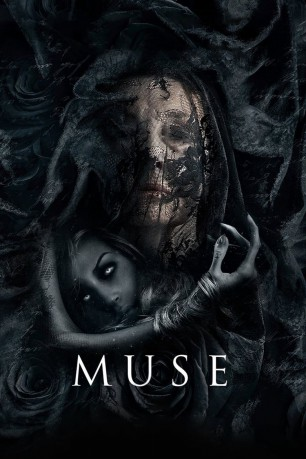
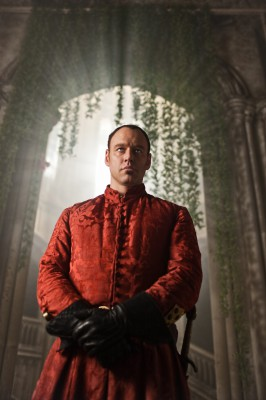

#9726 Muse
 
 IMDB-Wertung: 5.3 / 10
IMDB-Wertung: 5.3 / 10  Tomatometer: 17
Tomatometer: 17  Metascore: 0
Metascore: 0 
Seit dem tragischen Tod seiner Freundin leidet der angesehene Literaturprofessor Samuel Solomon (Elliot Cowan) an einem Albtraum, in dem eine Frau Opfer eines brutalen Ritualmords wird. Als die Frau aus seinen Träumen unter exakt denselben Umständen ermordet aufgefunden wird, sucht Samuel den Tatort auf. Dort trifft er auf Rachel (Ana Ularu), die ebenfalls von dem Mord geträumt hat. Gemeinsam versuchen sie, die Identität der geheimnisvollen Frau zu entschlüsseln und betreten eine furchterregende Welt, die von den Figuren beherrscht wird, die die Künstler im Laufe der Zeit inspiriert haben: Die Musen.
Jahr: 2017
Dauer: 107 Minuten
FSK:
Land: Spanien Studio: Fine FilmsTonspuren: DTS - ,
Untertitel: Deutsch,
Auflösung: 1080p (1920x808) Größe: 4321 MB
Genre: Thriller, Horror, Sci-Fi
Regisseur: Jaume Balagueró
Drehbuch: José Carlos Somoza, Jaume Balagueró, Fernando Navarro
Soundtrack: Stephen Rennicks
Darsteller:
-  Elliot Cowan als Samuel Solomon
 Franka Potente als Susan Gilard
Franka Potente als Susan Gilard Ana Ularu als Rachel
Ana Ularu als Rachel Leonor Watling als Lidia Garetti
Leonor Watling als Lidia Garetti- Manuela Vellés als Beatriz
- Joanne Whalley als Jacqueline
 Christopher Lloyd als Bernard Rauschen
Christopher Lloyd als Bernard Rauschen- Sam Hardy als Nito
- Yennis Cheung als She Who Punishes
- Ciaran McGlynn als Waiter in Bar
 Carlos Lasarte als Joy Hill Tenant
Carlos Lasarte als Joy Hill Tenant- Eve Connolly als Vanessa
- Cally O'Connell als Donnie
- Stella McCusker als She Who Lies
- Eve Maher als Girl
- Tighe Wardell als Boy
- Mark Fitzgerald als Nurse
- Lawrence Stanley als Student
- Frank Cannon als Nightclub Patron
Datei: X:\2017(G-M)\Muse (2017, FSK, 1920x808).mkv seit 11.10.2018
Festplatte: HD 2017(A-Z)-2018(A-F)
 Es gibt insgesamt 148 Filme in der Gruppe '2017(G-M)'
Es gibt insgesamt 148 Filme in der Gruppe '2017(G-M)'